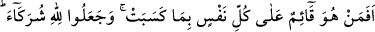
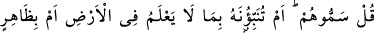
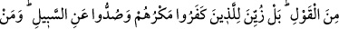
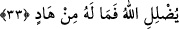

–“Menşûru getir.” dedi.
Şeyh evine gitti ve Mushaf’ı getirdi. Kumandanın önüne koydu ve açtı.
“Ey îman edenler! Kendi evinizden başka evlere, geldiğinizi farkettirip (izin alıp)
ev halkına selâm vermedikçe girmeyin.” (en-Nûr, 24/27) âyeti rast geldi.
Kumandan:
–“Ben padişahın menşûruna sâhip olduğunu zannettim.” dedi. Mushaf’a iltifat etmedi
ve şeyhin hânesine indi. O gece onu kulunç tuttu ve helâk oldu.
Sâib der ki:
Bülbüllerin sıcak nefesinin netîcesinde
Ki arsız şebnemin ömrü bir zaman olur
Şüphe yok ki bu tür çirkin davranışlarda bulunmak, nefsin sıfatlarının galebe
çalmasından ileri gelir. Şu halde akıl sâhibine düşen, nefsini kötü ahlâktan arındırmak
ve böylece Kahhâr olan Yaratıcı’nın kahrından kurtulmaktır.
Görmez misin ki mü’minler Nebî (a.s.)’a tâzim gözüyle baktılar, kibirlerini tevâzu ve
fenâya çevirdiler, teslîmiyyet dâiresine girdiler, böylece iki cihân saâdetine erdiler.
Kâfirler ise büyük bir kibir gösterdiler. Allah da bu yüzden beklemedikleri bir zamanda
köklerini kazıyıverdi. Böylece ebediyyen cehennemlik oldular. İşte kıyamete kadar
bütün mü’minlerle münkirlerin durumu böyledir. Çünkü velîler Allah Rasûlü’nün
vârisleridir. Onlara yapılan muâmele O’na yapılan muâmele gibidir.
Kemal Hocendî der ki:
Rasûl’ün vârisleri Cenâb-ı Hakk’a yakın kılınanlardır
Senin Cenâb-ı Hak’dan ve Rasûlü’nden böyle uzak olman nedir?!
33. Herkesin kazandığını gözetleyip muhafaza eden, (hiç böyle yapamayan gibi
olur mu?). Onlar Allah’a ortaklar koştular. De ki: “Onlara ad verin (onlar
necidir?). Yoksa siz Allah’a yeryüzünde bilmediği bir şeyi mi haber veriyorsunuz?
Yahut boş laf mı ediyorsunuz?” Doğrusu inkâr edenlere hileleri süslü gösterildi ve
onlar doğru yoldan alıkonuldular. Allah kimi saptırırsa artık onu doğru yola iletecek
yoktur.